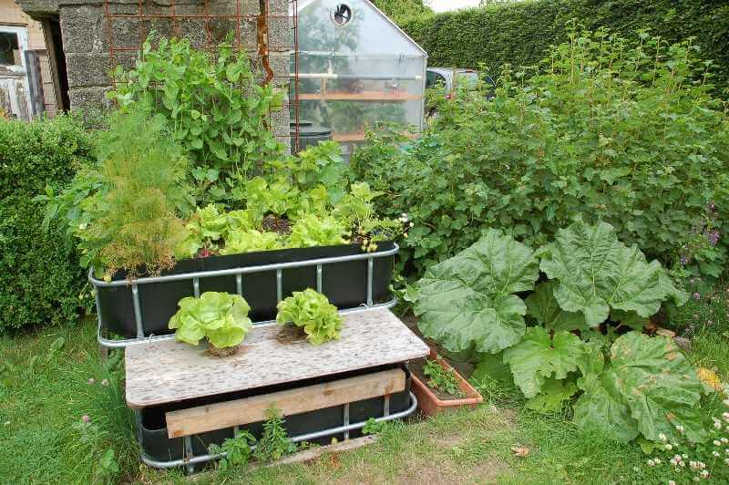

Vasch nlwikiLicense
Budget Hydroponics
How to reduce costs in your hydroponic system.
On the surface level, hydroponic gardening is the best choice for gardening. What could be
better than quicker plant
growth, higher quality crops, and more efficient production? However, as you get deeper into hydroponics,
you'll
realize
it requires a decent-sized initial investment, a ton of work, and some recurring costs. So is hydroponics
worth
it
financially?
YES. It’s an easy answer, yes. Hydroponics is 100% worth it. Modern hydroponic
systems
are designed to maximize profits
while reducing long-term costs. Once you are up and running, you can expect higher plant production, quicker
plant
growth, and cheap, nutritious vegetables. Following the guide below, you can increase the profits of your
system
even
more. Let's go!
What is Hydroponics?
Before we get started, let us review what hydroponics is precisely. Hydroponics is the
practice
of growing plants
without soil. Sound impossible? I know. In hydroponics, plants are grown in an inert medium such as Rockwool
(a
fibrous
material woven into squares), expanded clay pebbles (small fired clay balls), or perlite (an excavated mineral
rock).
Water is run through the medium to water the plants, and fertilizer is added to the water to supply nutrients
and
promote healthy growth. Hydroponics systems recirculate the water to provide an effective growth environment.
Due to the
constant water supply and nutrients, hydroponic systems grow plants faster, at a higher quality, and are more
space
efficient. If you need a more in-depth explanation of hydroponics, check out our guide.
Step 1. Calculate your Current Costs
Arguably both the most important and least important step. If you don't have a system yet,
skip
this part. First, figure
out how much you’re spending per garden harvest. Make sure to include water, nutrients, lights, heating, and
anything
else you regularly spend on your systems. Then, calculate the expected “revenue” of your system. Next,
calculate
how
much money you’re saving by not purchasing those vegetables from the store. This isn’t a perfect
representation
of your
‘revenue”, but it will do. Finally, subtract your cost from your revenue to find your expected “profit” per
harvest.
Hopefully, this is a positive number. If it’s not, don't worry. After you apply the methods below, you'll be
in
good
shape.
For Beginners
These tips are easy for everyone—the low-hanging fruit of hydroponics. So consider doing
these;
they’re easy and save
tons of money.
Improve Water Use
Hydroponics already has AMAZING water use. There are only a couple of points of weakness in a
hydroponic system
water-wise. First, consider using an ozone purification system or ultraviolet system to eliminate the need to
replace
the water. Water replacement is hard to do, a waste of nutrients, and slightly expensive. Second, consider
covering your
hydroponic system to keep as much moisture in the system as possible. Plants lose a lot of water through
transpiration,
the “exhalation” of water vapor from the plant into the air. By keeping moisture in, a constant amount of
water
vapor in
the air will slow the transpiration process. We have a great guide on reusing wastewater; check
it
out.
Use Natural Light
If your hydroponic system uses artificial light, try moving it somewhere it can get some
natural
light. Even if you
can’t wholly sever artificial light from your hydroponic system, you may be able to cut down on the lights
needed.
Reducing your artificial light dependence will not only cut down on the energy bill. You can sell your
leftover
lights
or use those lights to expand your current system.
Avoid Liquid Fertilizers
Liquid fertilizers have some intrinsic advantages; they are easy to apply and homogenous, but
they are HEAVY. They
contain a lot of water, which is expensive to ship and package. For every pound of fertilizer shipped, more
than
one
pound of water is also shipped (costly!). This will increase the cost of fertilizer massively. Consider
switching to
solid fertilizers or better, see “Prepare your Own Fertilizers” below.
Build your System DIY
Typical hydroponic systems sold by large retailers are overpriced consumer garbage, in my 100%
correct opinion of course
:). The all-in-one plug-in-play systems are fantastic in that you don't need to buy anything else, but they
charge a
hefty premium. Not only that, but most of those systems are utter garbage. They use cheap materials, can’t
grow
much,
and seem to exist just to look pretty. Two easy ways to solve this: shop local or build your own. Local stores
tend to
have lower prices and better offerings for all-in-one systems. Just don't buy a mass-market one from a local
store, that
kind of defeats the purpose. If you choose to build your own, don’t be intimidated by the complexity of
hydroponics.
Start small and slowly grow, spend time researching what you need before buying, and pay attention to your
plants.
Advanced
These are a little harder to implement, or they require more knowledge to implement. However,
some of these could REALLY
save you some money.
Make your Own Foliar Treatment
Foliar treatments are fertilizers applied directly to the leaves instead of roots. Plants can
rapidly transport
nutrients through their stomata into the plants, leading to faster growth. In devoted operations, foliar
spraying is a
no-brainer in your crop cycle. Foliar sprays are expensive, but they can be inexpensive if you prepare your
own
solutions.
Use your Own Silicon Additives
Many growers don't use silicate-containing additives on their crops and from that, have a much
greater chance of fungi
growth ruining their plants. Potassium silicate is exceptionally cheap, and you can make silicon additives
from
it to
protect your crop against fungal diseases. Consider doing it even if you’re not currently using a silicon
additive. The
small expense of purchasing potassium silicate can save you from plant loss and headaches down the line.
Bright AgrotechLicense
Farm Vertically
This may seem counterintuitive, but it is worth it in some situations. Going upwards saves you
money on heating,
reservoirs, pumps, and water. Not to mention it’s going to save you space, maybe that’s important too. If you
think thats cool, we've got a guide on it
Prepare your own fertilizers
If you are using a premade fertilizer or worse, a liquid fertilizer (see “Avoid Liquid
Fertilizers” above), consider
preparing your own fertilizers. It can save you money and allow for greater control of your fertilizer. Making
your own
fertilizer is simple. First, research your plants' macronutrient and micronutrient needs and order what you
need. If
that's too complicated, many companies sell the micronutrient parts, and then you can prepare the macro
fertilizer blend
yourself. Bulk macronutrients are incredibly cheap and widely available.
Reduce Labor
Yes, you will need to spend more to do this. Automate some parts of your system. You can add
nutrients automatically,
monitor water quality, and turn off the lights without a touch. It will save you time and be fun to do for
some.
We
know; why would you spend more money when you’re not saving any? Isn’t the whole point of this article to save
money?
Well, by automating, you'll save time and time = money. BOOM, “money” saved.
How to Implement These Strategies
Consider a few things if you’re hesitant to try some of these. First, the internet has
limitless
resources on each of
these topics. You can fully flesh out your knowledge of these topics before you try them. Also, these are the
best of
the best cost-saving ideas. We wouldn’t be giving them to you if we didn’t honestly think they were worth it.
When you
are ready to give them a shot, start small. Only apply a few strategies at a time to a small part of your
system
to see
if they work without risking all of your crops.
These changes can help a personal or commercial operation save tons of cash per year
in
nutrients, additives, and crop
loss. So, consider implementing them; even just a few can help your operation save lots.
Questions
Some of the tips above can be challenging to implement. I wouldn't recommend them for
beginners,
especially the advanced
ones. Please, don't hesitate to contact us if you have questions, even simple ones. Hydroponics is best when
you
don't
fail, but failure is inevitable and can be reduced with research and confidence. So reach out!
hydroponicsathome.us@gmail.com